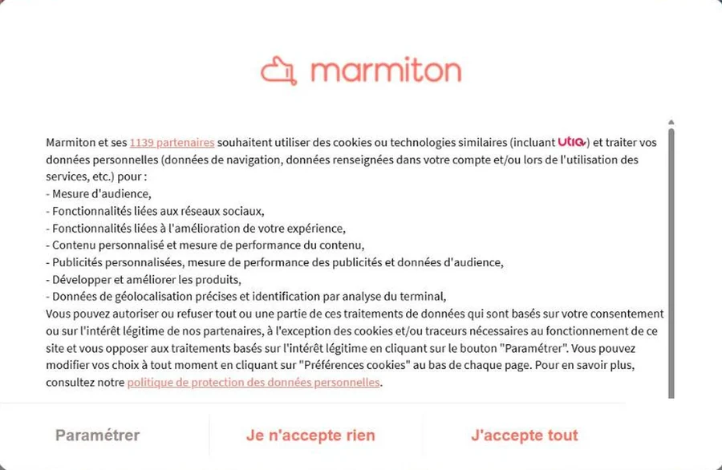

Un clic sur « Tout accepter », et des centaines d'entreprises peuvent te suivre de site en site. Ce que tu acceptes vraiment, et comment refuser sans rien casser.
Chrome · Firefox · SafariRien à installer1 captures annotées
1
C'est quoi ?
Un cookie est un petit fichier texte qu'un site range dans ton navigateur pour te reconnaître à la visite suivante. Le même mécanisme sert à des choses très différentes : garder ton panier, mesurer l'audience… ou te suivre d'un site à l'autre pour la publicité.
Les cookies nécessaires
Panier, connexion, langue, mémoire de ton choix sur le bandeau : ils sont exemptés de consentement et continuent de marcher même si tu refuses tout.
Toujours actifs
Les cookies du site
Déposés par le site que tu visites (cookies « internes ») : préférences, statistiques. La mesure d'audience peut se passer de ton accord si elle reste limitée (durée de vie de 13 mois, données gardées 25 mois au plus, selon la CNIL).
Souvent utiles
Les cookies tiers
Déposés par d'autres entreprises présentes sur la page (régies pub, réseaux sociaux). Ce sont eux qui te reconnaissent de site en site.
Ceux qui te suivent
Pas que des cookies
Les bandeaux parlent aussi de « technologies similaires » : pixels, empreinte de l'appareil, identifiants fournis par l'opérateur (Utiq sur Marmiton, par exemple). Ton choix les concerne aussi.
À savoir
Ce qu'il faut savoir
✓Refuser doit être aussi simple qu'accepter. C'est la règle de la CNIL depuis 2021 : à côté de « Tout accepter », un bouton « Tout refuser » (ou équivalent) au même niveau. Ne rien cliquer vaut refus.
!Des centaines de partenaires. Les bandeaux doivent afficher le nombre d'entreprises concernées dès le premier écran. Sur Marmiton, le 25/11/2026 : 1139 partenaires. Le registre publicitaire européen (TCF) en comptait 953 fin 2025.
↔Ton profil part aux enchères. Avec les enchères en temps réel, des données sur toi et la page sont envoyées à des acheteurs de pub pendant que la page charge (environ 200 ms). Selon l'ONG irlandaise ICCL (2022), c'est en moyenne 376 fois par jour pour un Européen.
⌂Ton choix est gardé. La CNIL recommande de garder ton refus (ou ton accord) 6 mois avant de te redemander. Tu peux changer d'avis à tout moment (lien « Cookies » ou « Préférences » en bas de page).
⚠Chrome garde les cookies tiers.Safari et Firefox bloquent les cookies tiers par défaut depuis 2020. Google a renoncé en 2024 à les supprimer de Chrome, puis en 2025 à afficher une demande dédiée : c'est à toi de les bloquer dans les réglages.
2
Comment ça marche
Ce qui se passe entre ton clic sur le bandeau et la pub qui te suit, et comment reprendre la main.
1
Tu arrives sur un site
Bandeau › Partenaires › Ton choix
Le bandeau liste les finalités (pub, mesure, réseaux sociaux…) et le nombre de partenaires. Tant que tu n'as rien accepté, le site ne doit déposer aucun cookie non nécessaire.

Le bandeau de Marmiton : 1139 partenaires, « Je n'accepte rien » au même niveau que « J'accepte tout » (25/11/2026).
2
« Tout accepter » : ton profil circule
Cookie tiers › Profil › Enchère
Les cookies des partenaires te donnent un identifiant. À chaque page avec de la pub, ton profil (centres d'intérêt, appareil, lieu approximatif) est proposé aux annonceurs en enchères en temps réel.
3
La pub te suit
Site A › Site B › Pub ciblée
Le gagnant de l'enchère affiche sa pub. Comme son cookie te reconnaît ailleurs, les baskets regardées sur un site réapparaissent sur le suivant : c'est le reciblage.
4
Reprendre la main
Tout refuser › Préférences › Réglages navigateur
Clique sur Tout refuser (le site marche pareil), change d'avis via le lien Cookies en bas de page, et dans Chrome : Paramètres › Confidentialité et sécurité › Cookies tiers › Bloquer les cookies tiers.
3
5 usages concrets
01
Refuser en un clic
« Tout refuser », « Je n'accepte rien » ou « Continuer sans accepter » : même effet, et le site fonctionne.
Tout refuser
02
Changer d'avis
Un lien « Cookies » ou « Gérer mes choix » en bas de page rouvre le bandeau.
Bas de page→Cookies→Tout refuser
03
Vider ses cookies
Effacer les cookies d'un site (ou de tous) te déconnecte, mais remet les compteurs pub à zéro.
Paramètres→Confidentialité→Effacer
04
Bloquer les cookies tiers
Dans Chrome, à activer à la main ; déjà fait par défaut dans Safari et Firefox.
ChromeSafariFirefox
05
Signaler un abus
Bouton refuser caché, cookies déposés malgré un refus : la CNIL reçoit les plaintes en ligne.
CNIL
4
Les navigateurs face aux cookies tiers
Le même clic n'a pas les mêmes conséquences selon ton navigateur.
Firefox
Protection totale des cookiesGratuit
Par défautWindows, Mac, Linux, Android
Bon pour : bloquer le suivi sans rien régler.
Safari
Prévention du suiviGratuit
Par défautiPhone, iPad, Mac
Bon pour : cookies tiers bloqués d'office.
Chrome
Bloquer les cookies tiersGratuit
À activerTous
Bon pour : les utilisateurs qui pensent à le régler (bloqués d'office seulement en navigation privée).
Notre verdict
SHEIN150 millions d'euros d'amende (CNIL, 1er septembre 2025). Lors d'un contrôle en août 2023 sur shein.com (12 millions de visiteurs en France chaque mois), des cookies pub étaient déposés dès l'arrivée, avant tout choix ; après « Tout refuser », d'autres étaient encore déposés et ceux déjà là encore lus.
GOOGLE325 millions d'euros le même jour, la plus grosse amende de la CNIL : cookies déposés sans consentement valide à la création d'un compte, et pubs glissées dans Gmail.
Rejoins les Repo-Potes
Chaque vidéo RepoPop Décode t'explique un sujet IA ou tech en moins d'une minute, avec sa fiche complète comme celle-ci.